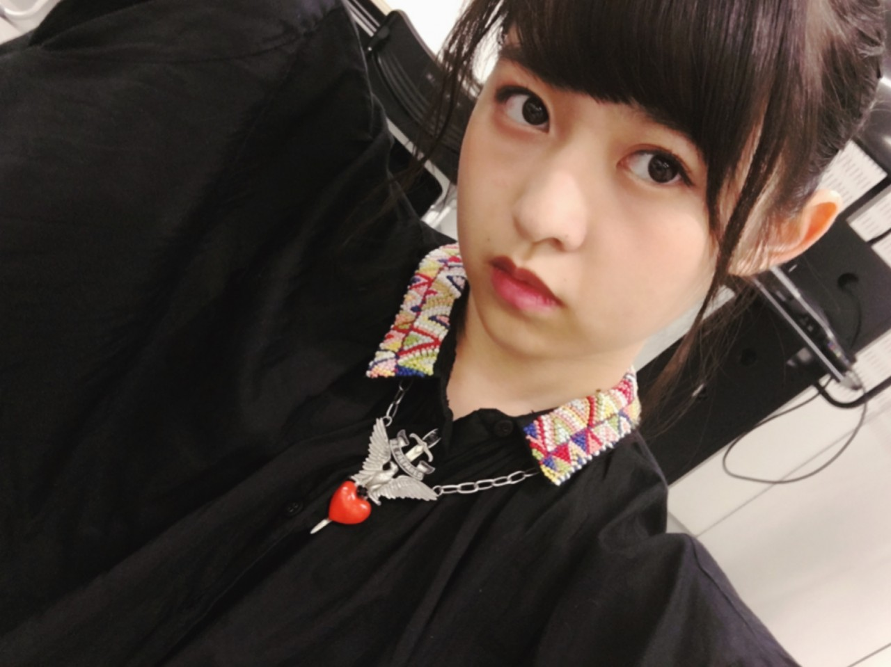
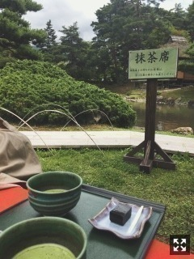

お久しぶりです、
もう8月です！
と言ってる内に夏終わりそう〜
あ、ぞろめ回！777！！
前回のぞろめ回辿ったら
2015年9月16日だった
今夏はやること多くて
充実してるなあと、思いつつ
難しいこと考えなきゃいけないこと多い。
あれこれ練って作業するのは好き。
大変だけど乗り越えたら
すごい自信になるんだろうなあと思う
からがんばります〜
そろそろ犬会したい。
相変わらず一点ハマると集中的に
徹底的に調べ上げて集めてしまうよ〜
GIANNI VERSACEが
だいぶ集まってきましたあ。
か、わ、い、い、！！！！！

アクセサリー熱も再発してきたよー
スニーカーも革靴も増える増える。
いかついドライフラワーまだまだ、、
紫陽花もたくさん欲しい。
リビングテーブルは
お気に入りの花と石並べてるだけで
もはやテーブルとして機能していない、！
逃げ水のダンスシーン美術セット
手前のこの風鈴が好み過ぎて持って
帰りたかったあああ
セグウェイで一通り遊んだあと、
空き時間庭園に行きました。
地元の方、自然と触れ合い、
スケバンニートふたりは更生したのです。
黒胡麻羊羹と抹茶

苔！！
薬草園もよかった
MVよく見えないと思うけど、
私頭にメジャー巻いてるんですよ。
なんでも測りたくなる系スケバンニート。
カオス！！！！
こないだ観た映画がずっと頭に残ってる。
本編始まる前の予告から家に帰るまで
本当に涙と鼻水止まらなくて
喉とお腹ずっと痛くて痛くて、、
鞄からハンカチ取るのも忘れて
垂れ流しっぱなし。
どっか打たれたのかぶっ壊れたのか、、
それほどに苦しくて欲して憧れたんだなあ
まりか